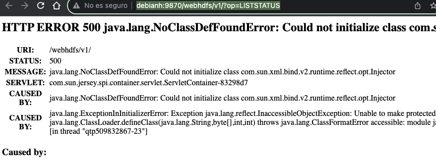

HDFS. Cluster Hadoop pseudodistribuido.
ℹ️ También conocido como Cluster de un solo nodo. Como solo tenemos un nodo, el mismo nodo será el maestro y el esclavo (no pasará nunca en producción ya que siempre tendremos un maestro y varios esclavos).
Creación / configuración del cluster
Como usuario hadoop
Accedemos por ssh a la máquina virtual en la que habíamos descomprimido hadoop.
cd /opt/hadoop/etc/hadoop/
$ ls
capacity-scheduler.xml hadoop-user-functions.sh.example kms-log4j.properties ssl-client.xml.example
configuration.xsl hdfs-rbf-site.xml kms-site.xml ssl-server.xml.example
container-executor.cfg **hdfs-site.xml** log4j.properties user_ec_policies.xml.template
**core-site.xml** httpfs-env.sh mapred-env.cmd workers
hadoop-env.cmd httpfs-log4j.properties mapred-env.sh yarn-env.cmd
hadoop-env.sh httpfs-site.xml mapred-queues.xml.template yarn-env.sh
hadoop-metrics2.properties kms-acls.xml **mapred-site.xml** yarnservice-log4j.properties
hadoop-policy.xml kms-env.sh shellprofile.d **yarn-site.xml**
Ficheros más importantes.
core-site.xml → configuración general del cluster.
hdfs-site.xml → configuración sistema de ficheros hdfs.
mapred-site.xml → configuración de mapreduce.
yarn-site.xml → configuración del modo de trabajo del proceso yarn.
core-site.xml
Inicialmente está vacío.
Lo modificamos para indicarle:
name → Qué sistema de fichero vamos a utilizar en hadoop (por defecto hdfs, hay otros).
value → Dónde se encuentra el servidor maestro que va a contener los datos (Namenode)
estará en nodo1 (la máquina donde me encuentro, puerto 9000)
<configuration>
<property>
<name>fs.defaultFS</name>
<value>hdfs://HOSTNAME:9000</value>
</property>
</configuration>
hdfs-site.xml
dfs.replication → Por defecto cada bloque se replica 3 veces, como tenemos 1 nodo, indicamos que solo hay 1 nodo que no replique.
dfs.namenode.name.dir → Dónde se encuentra la información del maestro (los metadatos que guarda el maestro).
Solo se indica en los clusters “maestro”, pero como estamos haciendo un cluster pseudodistribuido lo indicamos.
dfs.datanode.data.dir → En cada esclavo dónde se guardan los datos.
Solo se indica en los clusters “esclavos”, pero como estamos haciendo un cluster pseudodistribuido lo indicamos.
<configuration>
<property>
<name>dfs.replication</name>
<value>1</value>
</property>
<property>
<name>dfs.namenode.name.dir</name>
<value>/datos/namenode</value>
</property>
<property>
<name>dfs.datanode.data.dir</name>
<value>/datos/datanode</value>
</property>
</configuration>
hadoop-env.sh
Directorios y sistema de ficheros
- Creamos los directorios configurados en el punto anterior
- Cambiamos el propietario y grupo de /datos a
hadoop.
$ ls -la /datos
total 16
drwxr-xr-x 4 hadoop hadoop 4096 oct 26 08:28 .
drwxr-xr-x 19 root root 4096 oct 26 08:28 ..
drwxr-xr-x 2 hadoop hadoop 4096 oct 26 08:28 datanode
drwxr-xr-x 2 hadoop hadoop 4096 oct 26 08:28 namenode
- Creamos el sistema de ficheros del namenode (lo creará donde le hemos indicado en el xml).
# Formateamos el namenode
$ hdfs namenode -format
# Podemos de ver lo que ha creado...
$ ls /datos/namenode/*
Arrancamos HDFS
ℹ️ Hadoop tiene dos partes: DATOS y PROCESOS, actualmente estamos trabajando en la parte de DATOS.
Arrancamos los procesos de HDFS. Debe arrancar el NAMENODE, el SECONDARY NAMENODE y el DATANODE.
Vamos a la carpeta sbin dentro de hadoop.
$ cd /opt/hadoop/sbin/
$ start-dfs.sh
# 1. Arranca namenode
# 2. Arranca datanode
# 3. Arranca secondarynamenode
Dentro de las JDK de java, tenemos un comando para ver los procesos java en ejecución:
$ jps
3218 DataNode
3143 NameNode
3592 Jps
3485 SecondaryNameNode
# También podemos utilizar
$ ps -fe | grep java
Comprobamos las carpetas de datos
$ ls /datos/namenode/
current in_use.lock
# Ahora esta carpeta ya tiene datos
$ ls -a /datos/datanode/
. .. current in_use.lock
También podemos acceder a la web de Administración para ver el resultado.
Hadoop 2 → Puerto 50070
Hadoop 3 → Puerto 9870
Podemos acceder a la web de administración a través de:
http://HOSTNAME_O_IP:PUERTO
http://debianh:9864/ → Menos opciones


3. Trabajar con HFS
En /datos/namenode/current hay 3 tipos de ficheros:
-rw-r--r-- 1 hadoop hadoop 42 oct 26 09:09 edits_0000000000000000001-0000000000000000002
-rw-r--r-- 1 hadoop hadoop 42 oct 26 10:09 edits_0000000000000000003-0000000000000000004
-rw-r--r-- 1 hadoop hadoop 42 oct 26 12:34 edits_0000000000000000005-0000000000000000006
-rw-r--r-- 1 hadoop hadoop 1048576 oct 26 12:34 edits_inprogress_0000000000000000007
-rw-r--r-- 1 hadoop hadoop 401 oct 26 10:09 fsimage_0000000000000000004
-rw-r--r-- 1 hadoop hadoop 62 oct 26 10:09 fsimage_0000000000000000004.md5
-rw-r--r-- 1 hadoop hadoop 401 oct 26 12:34 fsimage_0000000000000000006
-rw-r--r-- 1 hadoop hadoop 62 oct 26 12:34 fsimage_0000000000000000006.md5
-rw-r--r-- 1 hadoop hadoop 2 oct 26 12:34 seen_txid
-rw-r--r-- 1 hadoop hadoop 214 oct 26 08:35 VERSION
$ cat VERSION
#Thu Oct 26 08:35:28 CEST 2023
namespaceID=623528578
blockpoolID=BP-1493409649-127.0.1.1-1698302128453
storageType=NAME_NODE
cTime=1698302128453
clusterID=CID-ca9bde81-b05d-4fcc-8c4c-b54887eada3b
layoutVersion=-66
Si paramos el cluster con stop-dfs.sh y lo volvemos a arrancar los números en los nombres de ficheros incrementan.
- edits_*: cambios dentro de la base de datos de HDFS.
- edits_inprogress_*: lo que se está escribiendo en este momento.
- fsimage_*: copia “foto”, de un momento en el tiempo del sistema de ficheros.
- Fichero VERSION
namespaceID: identificador único para el sistema de archivos HDFS en un clúster. Este identificador se utiliza para distinguir entre diferentes instancias del sistema de archivos HDFS en clústeres distintos. Cada clúster de Hadoop debe tener unnamespaceIDúnico para evitar conflictos. Si clonas o replica un clúster Hadoop, es importante que elnamespaceIDsea diferente en cada clúster para que no haya confusiones.blockpoolID: identificador único para el "block pool" en HDFS. El "block pool" es una colección de bloques de datos que se utilizan para almacenar los datos de los archivos en HDFS. Cada "block pool" tiene su propioblockpoolID, que se utiliza para diferenciar entre múltiples "block pools" en el mismo clúster. Esto es importante para la escalabilidad y la administración de bloques en el sistema de archivos.clusterID: identificador único para el clúster Hadoop. Este valor se utiliza para identificar un clúster específico y es importante para asegurarse de que los nodos del clúster se estén conectando al clúster correcto. ElclusterIDes necesario para garantizar que no haya problemas de conexión entre nodos cuando hay varios clústeres en la misma red o en escenarios de recuperación de desastres.
09. Errores
Permission denied: user=dr.who, access=WRITE, inode="/":hadoop:supergroup:drwxr-xr-x

Failed to retrieve data from /webhdfs/v1/?op=LISTSTATUS: Server Error
PROBLEMA con la versión de JAVA, java 17.
- Eliminar versión de JAVA.
- Instalar versión 11.
Se puede descargar desde:
https://gist.github.com/wavezhang/ba8425f24a968ec9b2a8619d7c2d86a6
Posible causa, no hay datanodes corriendo.
There are 0 datanode(s) running and 0 node(s) are excluded in this operation.
En el log de datanode: $ tail -f logs/hadoop-hadoop-datanode-debianh.log
2023-10-26 18:24:38,407 ERROR org.apache.hadoop.hdfs.server.datanode.DataNode: Initialization failed for Block pool (Datanode Uuid 6dfbb007-34b1-4a07-a045-274aad0e2936) service to debianh/127.0.1.1:9000. Exiting.
$ hdfs fsck / -includeSnapshots
# Borramos la carpeta current del namenode
$ rm -rf /datos/datanode/current
# Iniciamos datenode unicamente
$ hdfs --daemon start datanode
$ jps
2688 NameNode
3486 DataNode
3582 Jps
# Cuando ya no caiga DataNode
$ start-all.sh
Si analizamos la petición desde el inspector de html, vemos que:

Error: WARN util.NativeCodeLoader

No encuentra librerías nativas, no importa, es un warning (podría ir más lento debido a este error)
Para eliminar el warning hay que añadir en .bashrc
O recompilar hadoop…